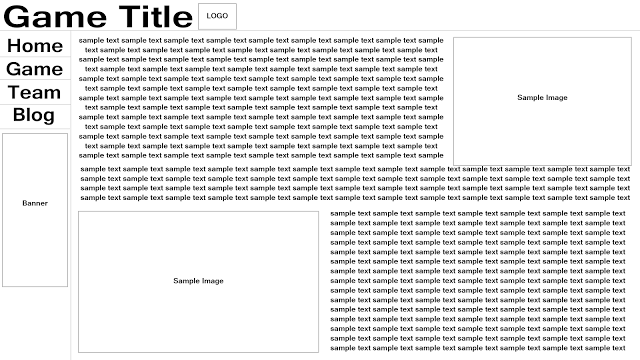

Entry 1 - 1/10/2015
Ok so i'm late posting this because i actually started work on my website last week around thursday, i took down some designs which you can see here.

So for the past week what i've been doing is researching HTML5 Javascript games to see what people are playing and what people are making. I have a few game ideas right now but i will talk about those in a later post.
For now i would like to talk you through how exactly i went about choosing the design from the few you can see above. So the design below is a quick mockup of the one i decided to go with, navigation on the left, title on the top and content in the middle around those margins.

I like this design because it's intuitive and leave room for personal flare. Of course it's not the most original website ever but when it comes to web design i find people prefer consistency, for example
most people will search the left hand side or the top for navigation and they will also expect the title to be on the top of the page.
So that's why i choose that layout for the website, the color scheme for the site has a little less justification. To be completely honest i went with the scheme you can see below because i like the way it looks.
In saying that i'm not sure i'm going to go with this scheme, if the game itself doesn't match the scheme then i will have to change it. But that's a thought for another day.
Thank you for reading and have a nice day.
William.
Entry 2 - 8/10/2015
So ive been doing a lot of work to the website you can see it here:-www.williamsaxton.co.uk/zomcorp/
As of typing this the site has primary navigation and a simple color scheme with the placeholders for the logo and banner. Personally i'm quite happy with the way it looks and how it feels, content is the only thing its lacking. So my plan is to finish up anything else i can think to do with the website and then concentrate on the game itself so there more to talk about and show off.
At the point im at right now i think im going to start working on a solid game design, i already have a ruff idea of what i want to make but i like having a solid plan to work from. The general idea of the game is probably going to be a survivor of a zombie apocalypse in a laboratory fighting to survive, i know it sounds dull and done a million times but im going to add a few interesting mechanics to liven up the game.
I did have an idea for an entirely wacked out game kind of like the retro game galaga but you play again another person and you control spawning of allies and fighting the battle yourself as well. However im thinking with the timescale ive got that game is slightly too ambition, bearing in mind i have other modules to work on. In saying that i do plan to make that game once i finish this year.
So yeah get a good game design down and continue to clean up the website, that's the current plan of action.
Entry 3 - 18/10/2015
Hello again, work on the website has been pretty steady and im quite happy with how things are looking. However we have a slight issue, we have a nice looking color scheme
and a fairly nice looking layout but we done have any content. Well we didn't at the start of the week anyway, over the past week or so ive been working on Zomcorp's
game design and i have to say its coming along nicely. If you head over to the game page you can see whats been done so far one the design of the game, the
game design is coming along nicely but there is still work to be done.
As of right now i have 6 sections to complete and i also have to make the page like all fancy and nice, the current sections are Game Idea, Game Play, Player, Enemies
Guns and Power Ups. ive completed the Game Idea section and the Game Play section but i think ill need to go back and edit that once everything else is finished.
Plans for the coming week are to get those sections finished and make the page look nice.
Entry 4 - 23/10/2015
Hi there folks, im here giving my weeklyish update once again. The plan for this week was to complete the game design sections that where talked about in the last post.
However i had a quick look at the specification for the first assessment and i had to add a couple sections and amend one so the sections i have completed the past
couple days are. Game Idea and Research, Game Play, Player, Enemies, Guns, Power Ups, Maps and Intended Goal and Expected Experience. So as of today all sections are
completed and now its just the game itself to be created.
The posts that follow will be about the development of the game with screen shots of the weeks work.